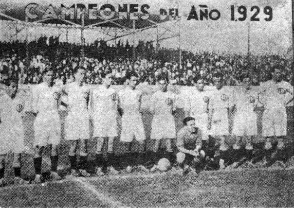
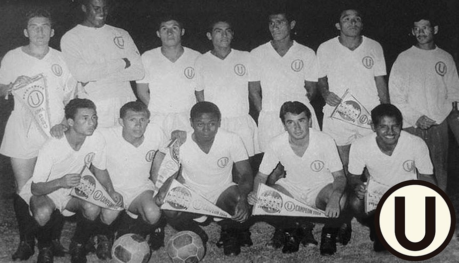
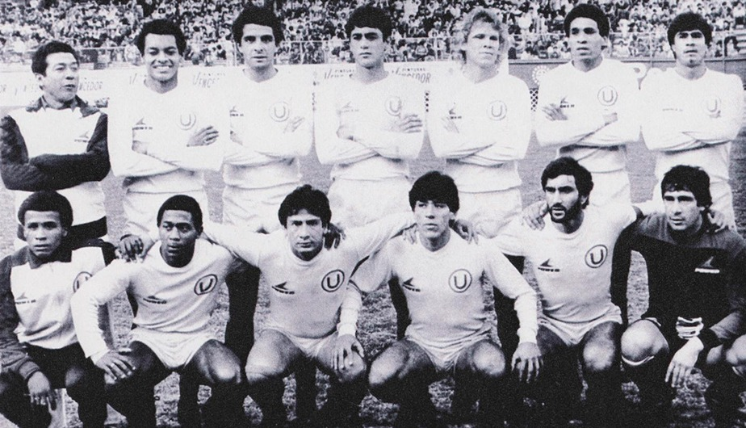

La historia detrás de la crema
Desde 1924, Universitario de Deportes ha vestido con orgullo los colores crema y rojo, convirtiéndose en uno de los clubes más emblemáticos del fútbol peruano.
Los primeros años (1924-1950)
El Club Universitario de Deportes fue fundado el 7 de agosto de 1924 por estudiantes de la Universidad Nacional Mayor de San Marcos. Desde sus inicios, el equipo adoptó el color crema característico, inspirado en las casacas de la universidad.
Las primeras camisetas eran simples y funcionales, confeccionadas artesanalmente con telas de algodón. No había sponsors ni logos elaborados, solo el escudo bordado a mano en el pecho izquierdo. Eran tiempos donde el fútbol era amateur y las indumentarias reflejaban esa simplicidad.

Campeones del campeonato peruano 1929
La época dorada (1960-1975)
Los años 60 y 70 marcaron la era más gloriosa del club. Con 13 campeonatos nacionales y la legendaria Copa América de 1972, Universitario se consolidó como una potencia del fútbol sudamericano.
Las camisetas de esta época comenzaron a modernizarse. Aparecieron las primeras marcas deportivas internacionales como Adidas, y los diseños incorporaban detalles más elaborados: cuellos tipo polo, rayas verticales sutiles y telas más ligeras que permitían mejor movilidad en la cancha.

Décimo campeonato de Universitario de Deportes en 1964
La modernización (1980-1990)
Las décadas de los 80 y 90 trajeron consigo una revolución en el diseño deportivo. Las camisetas dejaron de ser simples prendas y se convirtieron en piezas de marketing y tecnología.
Marcas como Puma, Umbro y Calvo introdujeron telas sintéticas que absorbían mejor el sudor, diseños más audaces con patrones geométricos, y los primeros sponsors comerciales que comenzaron a aparecer en el pecho. Cada temporada traía innovaciones: desde las rayas verticales de Power en 1988 hasta los diseños abstractos de Calvo en los 90.

Estrella 17, campeones en el año 1985
Más que una camiseta: identidad y pasión
A lo largo de casi un siglo, la camiseta crema de Universitario se ha convertido en más que una simple indumentaria deportiva. Es un símbolo de orgullo para millones de hinchas, representa la tradición universitaria y el fútbol bonito que caracteriza al club.
Cada diseño cuenta una historia: victorias épicas, jugadores legendarios como Lolo Fernández y Teófilo Cubillas, y momentos que quedaron grabados en la memoria colectiva del fútbol peruano. Las camisetas son testimonios materiales de esa rica historia.
Línea de tiempo
1924 - Fundación
Nace el Club Universitario de Deportes. Primera camiseta crema artesanal.
1966 - Primera marca internacional
Adidas viste por primera vez al club con diseños profesionales.
1988 - Era Power
Las icónicas rayas verticales cremas marcan una época.
1992 - Sponsors comerciales
Aparecen las primeras marcas patrocinadoras en las camisetas.